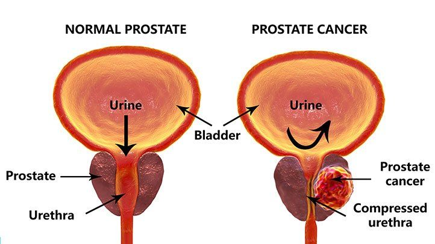
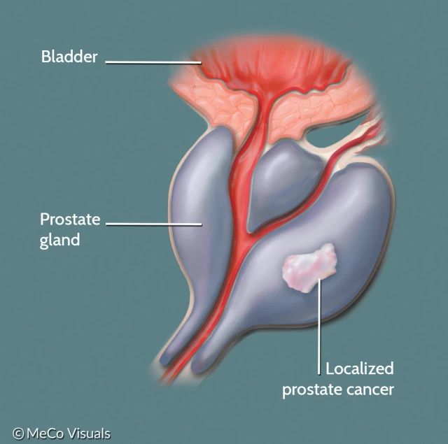

Prostate Cancer
What is Prostate Cancer?
Prostate cancer begins in the cells of the prostate. The prostate is a gland in the male reproductive system.
It lies just below the bladder. It makes fluid that is part of semen.
Prostate cancer is one of the most common types of cancer.
It often grows very slowly. If it does not spread to other parts of the body, it may not cause serious problems.
But sometimes prostate cancer can grow quickly and spread to other parts of the body. This kind of prostate cancer is serious.

Who Is More Likely To Develop Prostate Cancer?
Anyone who has a prostate can develop prostate cancer. But certain factors can make you more likely to develop it:
- Age. Your chance of developing prostate cancer increases as you get older. Prostate cancer is rare in people under age 50.
- Family health history. Your risk of prostate cancer is higher if you have a parent, sibling, or child who has or has had prostate cancer.
- Family history of lung cancer
- Race. African Americans are more likely to get prostate cancer. They're also more likely to:
- Get prostate cancer at a younger age.
- Have more serious prostate cancer.
- Die from prostate cancer.
What Are The Symptoms?
Prostate cancer doesn't always cause symptoms, especially at first. If it does cause symptoms, they may include:
Problems urinating (peeing), such as
- A urine stream that's weak, hard to start, or starts and stops
- Suddenly needing to urinate right away
- Urinating often, especially at night
- Pain or burning when urinating
- Blood in your urine or semen
- Pain in your lower back, hips, or pelvis that does not go away
- Painful ejaculation (the release of semen through the penis during orgasm)
- Weight loss for no known reason
- Fatigue
- Trouble swallowing
- Swelling in the face and/or veins in the neck

What Are Prostate Tests and How Is Prostate Cancer Diagnosed?
Tests which check for prostate cancer include:
- A digital rectal exam (DRE). In this exam, your provider feels your prostate for lumps or anything unusual by inserting a lubricated, gloved finger into your rectum.
- A prostate-specific antigen (PSA) blood test. A high PSA blood level may be a sign of prostate cancer. But many other things can cause high PSA levels, too.
- Imaging tests. These tests may use ultrasound or MRI to make pictures of your prostate.
- A physical exam
- Imaging tests, such as a chest x-ray or chest CT scan
- Lab tests, including tests of your blood and sputum
- A biopsy of the lung
If these tests show that you might have prostate cancer, the next step is usually a prostate biopsy. A biopsy is the only way to diagnose prostate cancer.
During a biopsy, a doctor uses a hollow needle to remove some prostate tissue. The tissue is studied under a microscope to look for cancer cells.